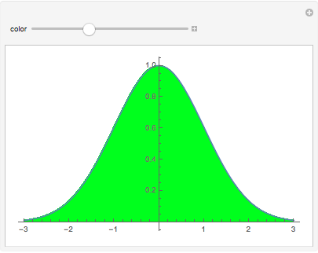

ArgColorPlot
| Introduction and implementation | Examples for using the ArgColorPlot package |
| The package VQM`ArgColorPlot |
The package VQM`ArgColorPlot provides methods to visualize complex-valued functions of one real variable. This package is part of the VQM packages which can be obtained here: https://vqm.uni-graz.at/pages/software.html (free download). The VQM packages are part of the Visual Quantum Mechanics project, see https://vqm.uni-graz.at. In particular, these packages are distributed with the book Advanced Visual Quantum Mechanics, Springer-Verlag New York, 2004.
Available functions in the VQM`ArgColorPlot package.
| In[34]:= |
Introduction and implementation
Here we describe theoretical background and the practical implementation of the main function in the package VQM`ArgColorPlot`.
FilledPlot
Filling of a graph can be obtained by
| In[14]:= |
| Out[14]= | Play Animation |
In that way one can produce neat looking graphs.
Again, it is only possible to plot real-valued functions.
Filling with an x-dependent color
In order to visualize a complex-valued function f[x] of one real variable, we use the following idea. We plot the curve Abs[f[x]] and fill the space between the curve and the horizontal axis with a color determined by Arg[f[x]]. Since the argument of a complex number is a real number modulo 2π, it appears natural to choose Hue[Arg[f[x]]/(2π)].
In order to be specific, we define a sample function
| In[16]:= |
We proceed as follows. First, we define a set of positions on the x-axis and calculate a table of function values at these positions.
| In[17]:= |
(The semicolon serves to suppress the lengthy output). Observe that the boundary values and the increment are given as real numbers. This guarantees that all generated values are real numbers. and when we calculate the value of f for one of these x-values, then Mathematica will return a numeric expression. The function values at these points can be calculated just by applying the function f to the list xvalues:
| In[18]:= |
The variable yvalues now contains a one-dimensional array of complex numbers. With the command Short we can look at an abbreviated form of this expression (The parameter in the command Short describes the desired length of the abbreviated expression). :
Next we generate a table of absolute values
| In[20]:= |
| In[21]:= |
From this we want to determine a table of color values. We could try to apply Hue to the list args, but this does not work because Hue is not "listable"
We have to use the command Map in order to apply Hue to each of the values in the list. Map has the shortcut /@
We can achieve this in one step by writing
| In[24]:= |
Next, we are going to plot a graph of the function f. Let us first plot the graph of the absolute value, which is represented by the list absvals. We shall convert this into a list of points which can then be joined to form a line. The coordinates of these points can be obtained from the lists xvalues and absvals. We just apply the command Transpose in order to obtain the list of (x.y) pairs.
| In[25]:= |
We can look at this by converting the graphics primitive graphline into a graphics object and by applying the command Show:
In fact, this line is a polygonal curve, but the corners are too close to be visible at this magnification.
The colors will be obtained by generating polygons which are filled with the appropriate color. Assume that we are given n+1 function values f[], f[From these n+1 values we can generate n polygons, where the k-th polygon is given by the points , f[], f[], and (k=0,..n-1). In a conventional programming language, one would think to generate the list of polygons with a sort of do-loop. In Mathematica it is much more effective to apply list operations. We first generate an auxiliary list of zero values
| In[27]:= |
The n-1 points (,0) for k=0 .. n on the x-axis are obtained by
| In[28]:= |
Next we form the list of points with coordinates (,f[])
| In[29]:= |
Now, this is a list of corner points for the polygons. The command Drop[list,±1] removes either the first or the last element of a list.
| In[30]:= |
The list of polygons is formed by mapping the command Polygon on the list of corner points.
| In[32]:= |
Finally, we combine the color directives from the list hue with each polygon
| In[33]:= |
We can combine this with the line of the curve:
We combine everything into a single command. This can be done using a Module.
| In[36]:= |
Let us test this command with a small list:
Phase-colored plot
We can easily use the command fillit to define a useful plot command for a list of complex numbers:
| In[38]:= |
| In[40]:= |
| In[41]:= |
In Mathematica 6 we can use ColorFunction to color the graphics as desired, however, antialiasing does not work (but should be possible to get it working).
The package VQM`ArgColorPlot
The (non-standard) package VQM`ArgColorPlot provides additional functionality
| In[45]:= |
All symbols defined by the VQM packages start with the letter "Q". In particular, the package implements QListArgColorPlot which corresponds to the command ListArgColorPlot defined above. But the command defined in the package accepts the standard options:
| In[48]:= |
There is a variant which corresponds to Plot
Further documentation is available via Mathematica's Help Browser, provided the VQM packages are properly installed.
Moreover, you can get help in the usual way:
Examples for using the ArgColorPlot package
This example shows a complex-valued Gaussian function.
Most of the options for ListLinePlot can be used also for QArgColorPlot. In addition, we can influence the Saturation and the Brightness of the colors for the complex phase:
Next, we illustrate the usage of QListArgColorPlot. First, we create a list of complex numbers.
| In[55]:= |
If, like here, the complex values come from the discretization of a function of a real variable x, we want to have x-values on the horizontal axis, and not the index of the complex list. This can be done with the option QHorizontalRange which specifies the range of x-values on the horizontal axis:
Here is another method to achieve a similar result:
We can also plot a part of the list, corresponding, for example, to the values in the sub-interval {-1,0} of the horizontal range {-2,2}:
If the "sub-interval" is larger than the horizontal range, the list will be padded with zeros:
If you want to combine a phase-colored plot with an ordinary plot of another function, you can use QCombinedPlot:
There is also a "ListPlot"-version of QCombinedPlot, where a list of complex values is plotted together with an ordinary function:
Normally, in QArgColorPlot, the range between the x-axis and the graph of the function is filled with a color corresponding to the phase. But we can also use another horizontal line at height y=y0 by using the option QBottomLine->y0:
This is useful, if we want to combine several ArgColorPlots in the same graphics:
Some more options for use with QArgColorPlot:
QSquared->True plots the square of the curve instead of the absolute value:
QShiftPlot->number performs a vertical shift of the whole plot by number.
| In[70]:= |
QPlotDown->True lets the whole plot appear uside down.
In quantum mechanics, a 2-valued functions is called a spinor function. The ArgColorPlot has a method to plot such functions by combining QArgColorPlots of the two component-functions. By default, the second component is plotted upside down and with less saturation:
RM: QSpinorPlot does not add black boundary-lines for the second component. OK?
Like the other commands, this command accepts options and allows a combination with an ordinary plot